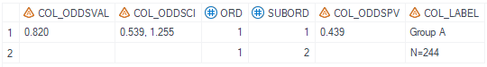

Example
Example 1 Calculate Odds Ratio related only with stratification factors
Example 2 Calculate Odds Ratio and relative risk related without stratification factors
Example 1 Calculate odds ratio related only with stratification factors
Details
This example does the following:
Calculate odds ratio, confidence interval and p-value of odds ratio considering stratification factors for objective response.
Program
%m_u_binom_odds(inds= adeff_all
, whr= paramcd='TRORESPU' and OTLVBPFL='Y' and PARQUAL='INDEPENDENT ASSESSOR'
, pop_flag= ittfl='Y'
, trtgrpn= trt01pn
, trtgrp= trt01p
, trtpair= str(1 2)
, trtfmt=
, trtref= 2
, strata= strat1n strat2n
, var=
, event=
, alpha=
, pvalside=
, pvdecim=
, cidecim=
, relcal= N
, cltype=
, supds=
, missval=
, ord= 1
, deBug= N
);
Program Description
Input data feature
The input dataset is a standard ADEFF adam dataset and contains required variables: USUBJID, TRT01PN,TRT01P,AVAL,PARAM,PARAMCD etc. The dataset must include variable AVAL with value of 0 or 1.

Parameter description
Filter the dataset using either the
whrvariable, or during data-preprocess of the input dataset and make sure only onePARAMCDis selected.The parameter
trtpairdefines the treatment group pair for analysis andtrtrefspecifies the treatment group that will be used as reference. Thetrtrefshould be withintrtpair.Parameter
stratadefines the stratification variables to be consifered if any, note that the value type forstratamust be numeric.
Output
Generate a dataset named final_odds_1 that contains the odds ratio, odds ratio confidence interval and odds ratio p-value.
If unable to calculate the confidence interval , display text defined by missval will be displayed.

Example 2 Calculate odds ratio and relative risk risk difference related without stratification factors
Details
This example does the following:
Calculate odds ratio, confidence interval and p-value of odds ratio along with relative risk estimate and confidence interval, risk difference estimate, confidence interval and p-value without considering stratification factors for objective response.
Program
%m_u_binom_odds(inds= adeff_all
, whr= paramcd='TRORESPU' and OTLVBPFL='Y' and PARQUAL='INDEPENDENT ASSESSOR'
, pop_flag= ittfl='Y'
, trtgrpn= trt01pn
, trtgrp= trt01p
, trtpair= str(1 2)
, trtfmt=
, trtref= 2
, strata=
, var=
, event=
, alpha= 0.1
, pvalside=
, pvdecim= 3
, cidecim= 3
, relcal= Y
, cltype=
, supds=
, missval=
, ord= 1
, deBug= N
);
Program Description
Input data feature
The input dataset is a standard ADEFF adam dataset and contains required variables: USUBJID, TRT01PN,TRT01P,AVAL,PARAM,PARAMCD etc. The dataset must include variable AVAL with value of 0 or 1.
Parameter description
Filter the dataset using either the
whrvariable, or during data-preprocess of the input dataset and make sure only onePARAMCDis selected.The parameter
trtpairdefines the treatment group pair for analysis andtrtrefspecifies the treatment group that will be used as reference. Thetrtrefshould be withintrtpair.Note that in order to obtain relative risk and risk difference related calculations,
relcalmust be set to 'Y'.pvdecim, cidecimare both set to 3 and in the output dataset, the rounding are corresponding to the decimal places defined.
Output
Generate a dataset named final_odds_1 that contains the odds ratio, odds ratio confidence interval and odds ratio p-value.
If unable to calculate the confidence interval , display text defined by missval will be displayed.

Generate a dataset named final_cmh_1 that contains the relative risk estimate and confidence interval, risk difference estimate, confidence interval and p-value.